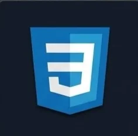
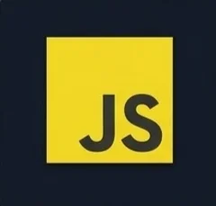
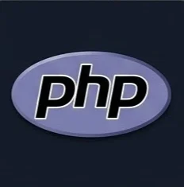
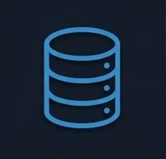
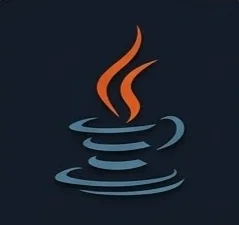
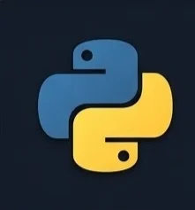

María Barragán Estévez
Desarrolladora Web | Estudiante de Máster en Ciberseguridad
Apasionada por la tecnología, la seguridad y el desarrollo web.
Me interesa explorar, crear y encontrar nuevas formas de mejorar el mundo digital.
Conóceme
Soy María, desarrolladora web en formación y estudiante del máster en Ciberseguridad. Me encanta aprender, afrontar nuevos retos y trabajar en proyectos que me permitan seguir creciendo profesionalmente.
Mi objetivo es combinar el desarrollo web con la seguridad para crear soluciones robustas, eficientes y seguras.
- Asturias, España
-
DAW · FP (2025–2027)
Máster en Ciberseguridad (2025–2027) - En constante aprendizaje
Habilidades





